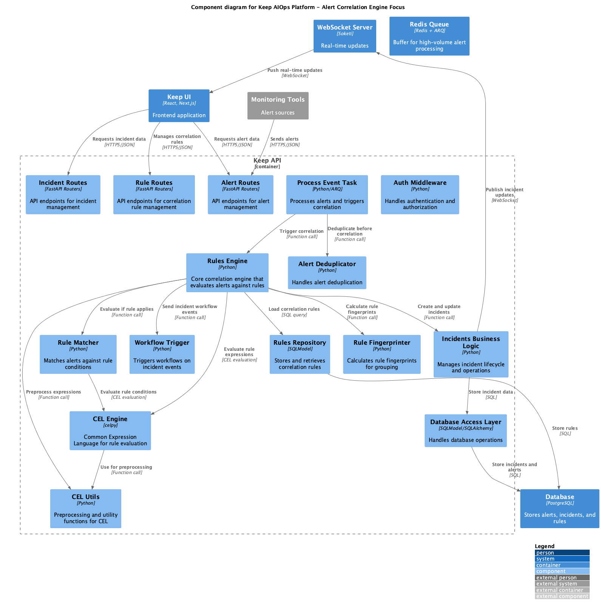
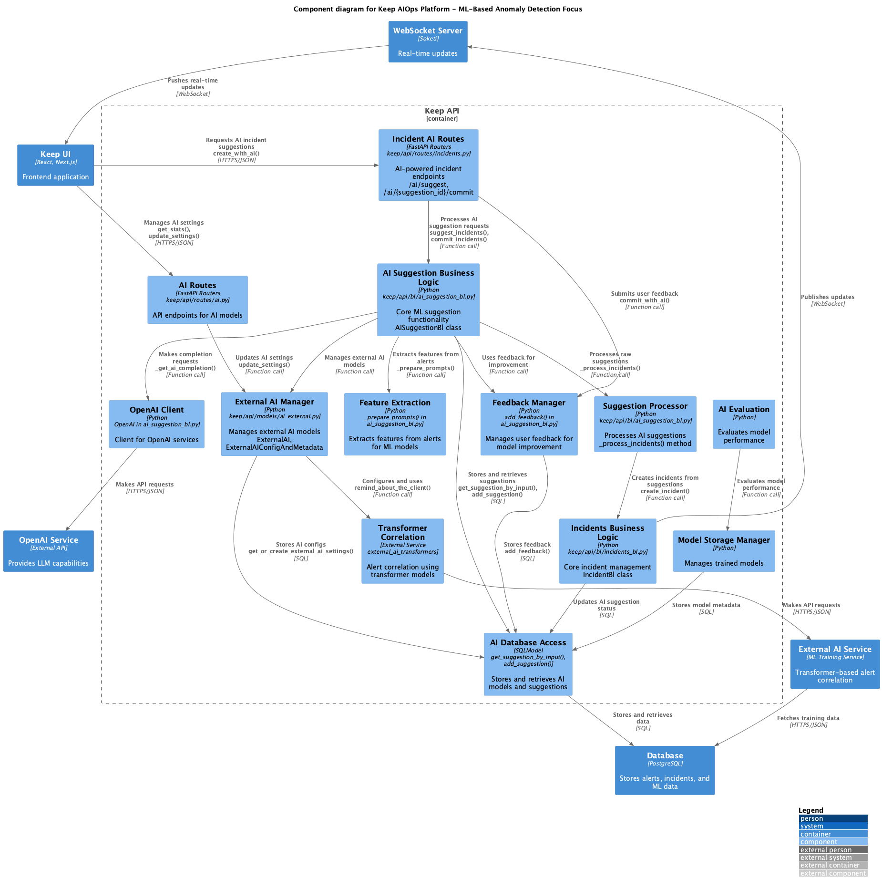

Keep AIOps Platform - Architecture Diagrams
C4 Architecture Diagrams
Keep Component Correlation

Keep Component Improved
Keep Component Incident
Keep Component ML

Class Diagrams
alert incident Class Diagram
correlation Class Diagram
incident management Class Diagram
ml anomaly detection Class Diagram
Sequence Diagrams
alert processing sequence
correlation sequence
incident lifecycle sequence
ml anomaly detection sequence